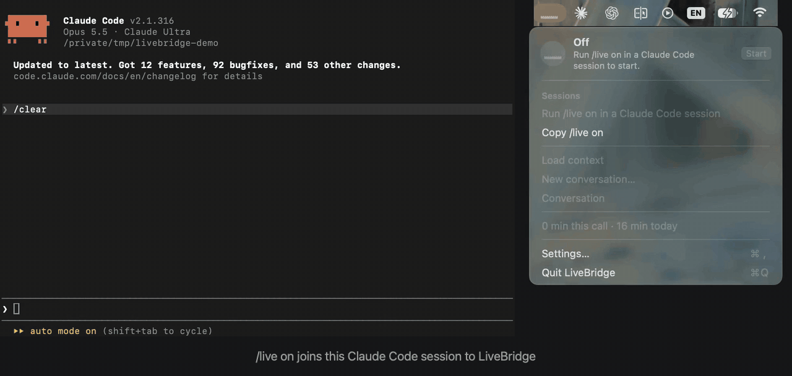

A macOS menu bar app that keeps a GPT-Live voice line ready through codex on your ChatGPT login, with no API key. The voice chats, asks what you mean, and hands real work to your Claude Code session. Claude does the work with its own model, tools and permission mode, and the voice tells you the result.
Unofficial. Not affiliated with, endorsed by or supported by Anthropic or OpenAI. LiveBridge relies on codex’s experimental realtime API, which can change with any codex release.
One request, start to finish

How it works
Three parts, all on your Mac, each with one job.
The voice
GPT-Live, through codex app-server on your ChatGPT login
The front desk. It chats, answers explanations itself and hands off tasks, questions about the code, decisions and corrections. Its codex thread is ephemeral and read-only, with every MCP server off: it is there only to talk.
LiveBridge
The menu bar app
Holds the call. Voice detection runs on your Mac, and the line to the voice opens only while someone is talking. It keeps each session’s conversation and routes each request to the session you picked.
The Claude Code mod
livebridge, joined with /live on
Submits each voice request to your session as a prompt and posts the answer back. It draws a band above the prompt with Start and Stop. The mod and the app talk over a Unix socket only your user can open.
Install
You need macOS 14 or later on Apple Silicon, Claude Code 2.1.301 or later, and codex signed in with codex login to a ChatGPT plan that includes realtime voice. The README has the details.
Install the app
Download LiveBridge.dmg from the latest GitHub Release. GitHub Actions builds it from the release’s tag and attests it; to check that your file is that build, unchanged, run this with the GitHub CLI in the folder you saved it to, with vX.Y.Z the release’s tag:
The app is not notarized, so macOS blocks it the first time you open it. To allow it:
Open LiveBridge once and close the warning.
Open System Settings › Privacy & Security, scroll down to Security, and click Open Anyway next to the message about LiveBridge.
Confirm with Open, and enter your Mac password if asked.
On macOS 14 you can also Control-click LiveBridge in Applications, choose Open, then Open again.
Prefer to build it yourself? With Xcode and a Swift 6.0 toolchain, clone the repository and run scripts/build-app.sh --release. It builds the app, installs it in /Applications and opens it. See Install in the README, which also says how to uninstall.
Install the mod
In Terminal, add the marketplace and install the mod:
claude plugin marketplace add getLiveBridge/LiveBridge
claude plugin install livebridge@livebridge
Start talking
In the Claude Code session you want to talk to, type:
/live on
Press Start in the band above the prompt, allow the microphone, and talk.
If /live is not found in a session that was already open, reopen the session. macOS may also ask whether LiveBridge may find devices on your local network; the voice line needs that permission too.
Built to stay out of the way
Local by design
No telemetry and no server of its own. The app listens on no network port. Besides what codex and Claude Code already send (the voice line to OpenAI while it is open, and Claude’s work to Anthropic), the app’s only traffic of its own is a short-lived codex that, when you open the menu, asks OpenAI for your Codex usage figures, also while the call is off, and the traffic for updates: an automatic check with GitHub for a new release (daily, and at launch while one it announced is not installed), which you can turn off; the same check when you press Check for update; gh auth status when a new release is announced; and the download, its verification and the mod’s update when you click Install. The README’s Privacy section lists exactly what reaches OpenAI and names the requests the app makes to GitHub.
Billing-aware
While nobody is talking, the microphone feeds only a voice detector on your Mac and nothing is sent. The line opens when you speak, closes once the talk goes quiet, and after a handoff stays open a little longer for Claude’s answer. The README’s Billing section has the timings.
Memory per session
Each Claude Code session has its own conversation with the voice, carried across Stop and Start, so the voice remembers what you said a minute ago.
Your Claude keeps its permissions
Requests run under the session’s own permission mode. When Claude waits for a permission prompt, the voice tells you, and you answer it in Claude Code; LiveBridge never answers it for you. Anything the microphone hears can become a request, so read SECURITY.md before using voice with a mode that acts without asking.
Open source
LiveBridge is MIT-licensed and open to contributors. For anything larger than a fix, open an issue first so the shape can be agreed before the work starts. CONTRIBUTING.md has the layout, the toolchain and the checks.
Today it is one Mac app, one worker and one voice provider. They meet at narrow seams, and each of these directions needs help:
Windows and Linux
The wire between the mod and the app is portable. A port starts with an app for the new platform that speaks the same wire.
Other agents as the worker
Codex CLI, Hermes Agent or Gemini CLI, each through its own adapter that speaks the same wire as the Claude Code mod.
Other voice providers
The OpenAI Realtime API with your own key, or Google’s Gemini Live API, as another implementation of the realtime protocol.